2026
118 books
★★★ Waiting for GodotSamuel BeckettPlays & scriptsRead October 2026★★★ Jar of HeartsJennifer HillierMystery & thrillerRead October 2026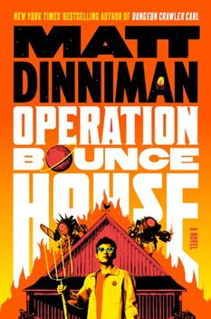
★★DNF 29% Operation Bounce HouseMatt DinnimanScience fictionRead October 2026 · stopped at 29%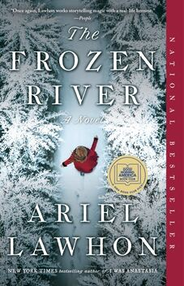
★★★ The Frozen RiverAriel LawhonHistorical fictionRead October 2026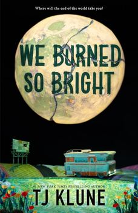
★★★ We Burned So BrightTJ KluneScience fictionRead September 2026★★ Survival of the Richest: Escape Fantasies of the Tech BillionairesDouglas RushkoffPolitics & societyRead September 2026★★★★ This Book Made Me Think of YouLibby PageLiterary fictionRead September 2026★★★★ The Secrets We Hide (North Falls 2)Karin SlaughterMystery & thrillerRead September 2026★★ The Family Remains (TFUpstairs Sequel)Lisa JewellMystery & thrillerRead August 2026★★★ The HousekeeperJoy FieldingMystery & thrillerRead August 2026★★★ Things We Do in the DarkJennifer HillierMystery & thrillerRead August 2026★★★★ Little SecretsJennifer HillierMystery & thrillerRead August 2026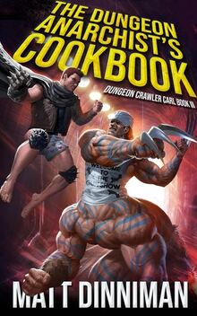
★★DNF 33% The Dungeon Anarchist’s Cookbook (Dungeon Crawler Carl #3)Matt DinnimanFantasyRead August 2026 · stopped at 33%★ Us Against YouFredrik BackmanLiterary fictionRead August 2026★★★ The Family UpstairsLisa JewellMystery & thrillerRead August 2026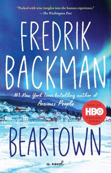
★★★ BeartownFredrik BackmanLiterary fictionRead August 2026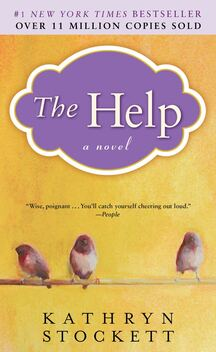
★★★★ The HelpKathryn StockettHistorical fictionRead August 2026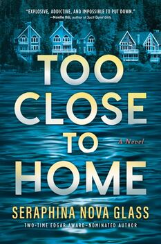
★★★ Too Close to HomeSeraphina Nova GlassMystery & thrillerRead August 2026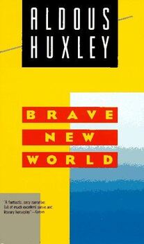
★DNF 55% Brave New WorldAldous HuxleyLiterary fictionRead August 2026 · stopped at 55% · also read 2006★★★ Then She Was GoneLisa JewellMystery & thrillerRead July 2026★★★★ Anxious PeopleFredrik BackmanLiterary fictionRead July 2026★ The Silent PatientAlex MichaelidesMystery & thrillerRead July 2026★★★★★ Range: Why Generalists Triumph in a Specialized WorldrangeDavid EpsteinSelf-help & psychologyAlso read 2025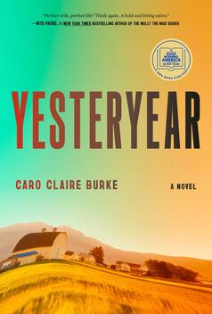
★★★★ YesteryearCaro Claire BurkeLiterary fictionRead July 2026★★★★ We Are All Guilty Here (North Falls 1)Karin SlaughterMystery & thrillerRead July 2026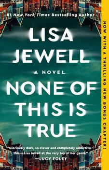
★★★★ None of This Is TrueLisa JewellMystery & thrillerRead July 2026★★★ Willpower: Rediscovering the Greatest Human StrengthRoy & John Baumeister & TierneySelf-help & psychologyRead July 2026★★★ Semi-Well-Adjusted Despite Literally Everything: A MemoirAlyson StonerBiography & memoirRead July 2026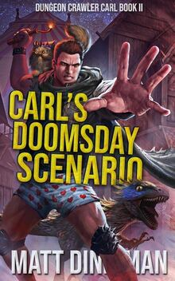
★★ Carl’s Doomsday ScenarioMatt DinnimanFantasyRead July 2026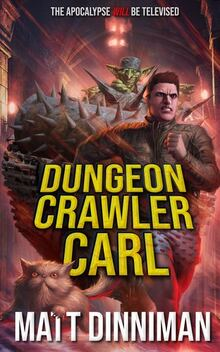
★★★ Dungeon Crawler CarlMatt DinnimanFantasyRead July 2026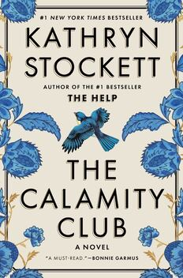
★★★★ The Calamity ClubKathryn StockettHistorical fictionRead July 2026★★★★ The DelugeStephen MarkleyLiterary fictionRead July 2026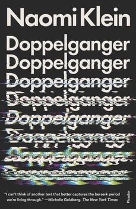
★★★ Doppelgänger: A Trip Into the Mirror WorldNaomi KleinPolitics & societyRead June 2026★★★★ The Best LiesDavid EllisMystery & thrillerRead June 2026★★★★ The Power of the DogDon WinslowMystery & thrillerRead June 2026★★★ The Magnificent Lives of Marjorie PostAllison PatakiHistorical fictionRead May 2026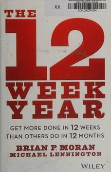
★★★ The 12-Week Year: Get More Done in 12 Weeks Than Others Do in 12 MonthsBrian & Michael Moran & LenningtomBusiness & moneyRead May 2026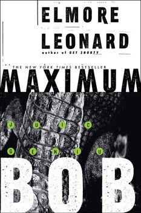
★★★ Maximum BobElmore LeonardMystery & thrillerRead May 2026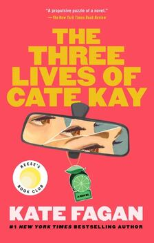
★★★ The Three Lives of Cate KayKate FaganLiterary fictionRead May 2026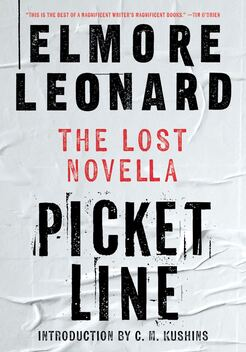
★★★★ Picket LineElmore LeonardMystery & thrillerRead May 2026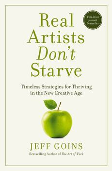
★★★★ Real Artists Don't Starve: Timeless Strategies for Thriving in the New Creative Age (1)Jeff GoinsBusiness & moneyRead May 2026 · also read 2025★★★ A Night in the Lonesome OctoberRoger ZelaznyFantasyRead May 2026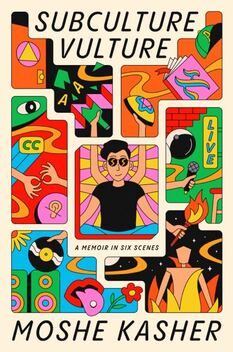
★★★ Subculture VultureMoshe KasherBiography & memoirRead May 2026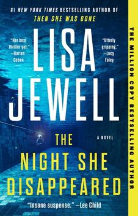
★★★ The Night She DisappearedLisa JewellMystery & thrillerRead May 2026★★★ The Gift of Fear: Survival Signals That Protect Us from ViolenceGavin de BeckerSelf-help & psychologyRead May 2026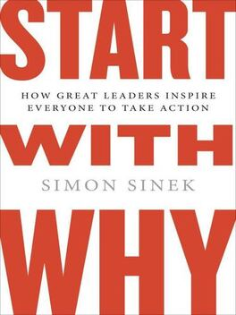
★★★ Start with Why: How Great Leaders Inspire Everyone to Take ActionSimon SinekBusiness & moneyRead May 2026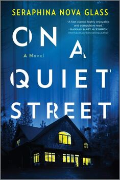
★★★ On a Quiet StreetSeraphina Nova GlassMystery & thrillerRead April 2026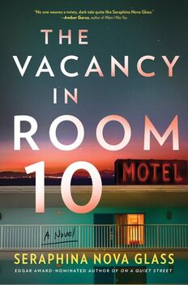
★★★ The Vacancy in Room 10Seraphina Nova GlassMystery & thrillerRead April 2026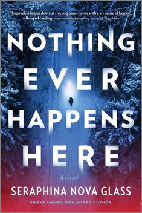
★★★ Nothing Ever Happens HereSeraphina Nova GlassMystery & thrillerRead April 2026★★ The Guest ListLucy FoleyMystery & thrillerRead April 2026★★★★ The Seven Husbands of Evelyn HugoTaylor Jenkins ReidLiterary fictionRead April 2026★★★ All the Wrong PlacesJoy FieldingMystery & thrillerRead April 2026★★★ Fear Your Strengths: What You Are Best at Could Be Your Biggest ProblemRoberts Kaplan and KaiserBusiness & moneyRead April 2026★★ How to Kill Your FamilyBella MackieMystery & thrillerRead April 2026★★ Kasher in the Rye: The True Tale of a White Boy from Oakland Who Became a Drug Addict, Criminal, Mental Patient, and Then Turned 16Moshe KasherBiography & memoirRead April 2026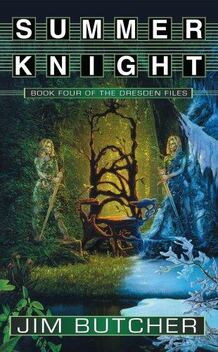
★★ Summer Knight (Dresden Files #4)Jim ButcherFantasyRead April 2026★★★★ OhioStephen MarkleyLiterary fictionRead April 2026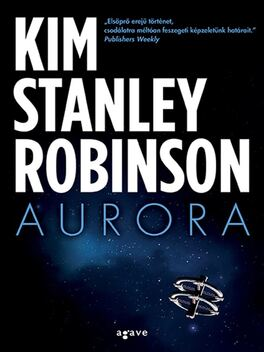
★DNF 41% AuroraKim Stanley RobinsonScience fictionRead April 2026 · stopped at 41%★★★ Yes PleaseAmy PoehlerBiography & memoirRead April 2026★★★ A Man Called OveFredrik BackmanLiterary fictionRead April 2026★★★ My FriendsFredrik BackmanLiterary fictionRead April 2026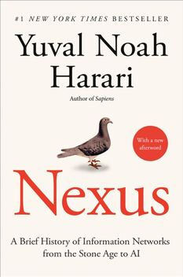
★★★ Nexus: A Brief History of Information Networks from the Stone Age to AIYuval Noah HarariTechnologyRead April 2026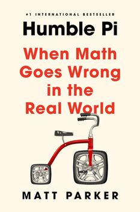
★★★ Humble Pi: When Math Goes Wrong in the Real WorldMatt ParkerScience & mathRead March 2026★★★ Just KidsPatti SmithBiography & memoirRead March 2026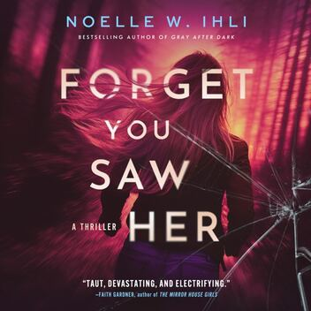
★★★ Forget You Saw HerNoelle IhliMystery & thrillerRead March 2026★★★★ Look CloserDavid EllisMystery & thrillerRead March 2026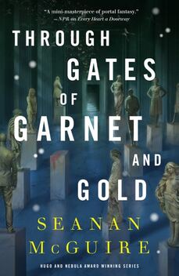
★★★ Through Gates of Garnet and GoldSeanan McGuireFantasyRead March 2026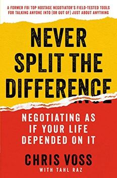
★★★ Never Split the Difference: Negotiating As If Your Life Depended On ItChristopher VossBusiness & moneyRead March 2026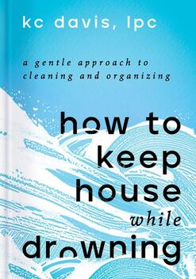
★★★ How to Keep House While DrowningKC DavisSelf-help & psychologyRead March 2026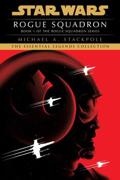
★★ Rogue Squadron (Rogue Squadron #1)Michael StackpoleScience fictionRead March 2026★★★ The End of HerShari LapenaMystery & thrillerRead March 2026★★★ The First Fifteen Lives of Harry AugustClaire NorthScience fictionRead March 2026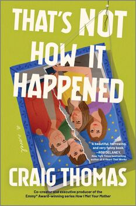
★★★★★ That’s Not How It HappenedCraig ThomasLiterary fictionRead March 2026★★★ A Stranger in the HouseShari LapenaMystery & thrillerRead March 2026★★★ Everyone Here Is LyingShari LapenaMystery & thrillerRead March 2026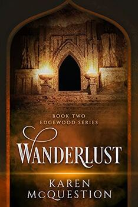
★★ Wanderlust (Edgewood #2)Karen McQuestionScience fiction · Young adultRead March 2026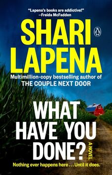
★★★ What Have You Done?Shari LapenaMystery & thrillerRead February 2026★★★ Not a Happy FamilyShari LapenaMystery & thrillerRead February 2026★★★ The Couple Next DoorShari LapenaMystery & thrillerRead February 2026★★★ The Very Secret Society of Irregular WitchesSangu MandannaFantasyRead February 2026★★★ Edgewood (Edgewood #1)Karen McQuestionScience fiction · Young adultRead February 2026★★★ An Unwanted GuestShari LapenaMystery & thrillerRead February 2026★★★ Someone We KnowShari LapenaMystery & thrillerRead February 2026★★★ She Didn’t See It ComingShari LapenaMystery & thrillerRead February 2026★★★★★ Getting Things Done: The Art of Stress-Free ProductivityDavid AllenSelf-help & psychologyAlso read 2025★DNF 14% The Shadow of the WindCarlos Ruiz ZafonLiterary fictionRead February 2026 · stopped at 14%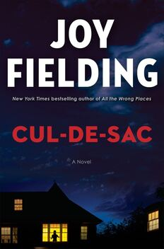
★★★★★ Cul-de-sacJoy FieldingMystery & thrillerRead February 2026★★★★ You Deserve to KnowAggie Blum ThompsonMystery & thrillerRead February 2026★ Touring for Death (Kate Jones Thrillers Novella 4)DV BerkomMystery & thrillerRead February 2026
★ Death Rites (Kate Jones Thrillers Novella 3)DV BerkomMystery & thrillerRead February 2026
★ Dead of Winter (Kate Jones Thrillers Novella 2)DV BerkomMystery & thrillerRead February 2026
★ Bad Spirits (Kate Jones Thrillers Novella 1)DV BerkomMystery & thrillerRead February 2026★★★★ The Moonlight ChildKaren McQuestionMystery & thrillerRead February 2026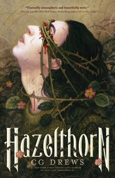
★★★ HazelthornCG WellsHorror · Young adultRead February 2026★★ System Apocalypse: Life in the NorthTap WongFantasyRead February 2026★★ The CastleSkye WarrenRomanceRead February 2026★★ The KnightSkye WarrenRomanceRead February 2026★★ The PawnSkye WarrenRomanceRead February 2026★★★ Lies My Teacher Told Me: Everything Your American History Teacher Got WrongJames LoewenHistoryRead February 2026★★★ A People’s History of the World: From Stone Age to the New MilleniumChris HarmanHistoryRead February 2026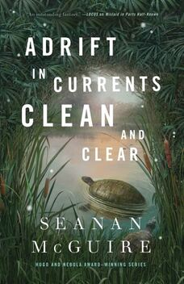
★★★ Adrift In Currents Clean and ClearSeanan McGuireFantasyRead February 2026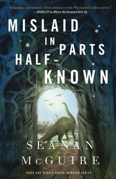
★★★ Mislaid In Parts Half KnownSeanan McGuireFantasyRead February 2026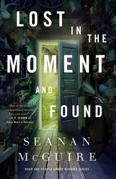
★★★ Lost In The Moment And FoundSeanan McGuireFantasyRead January 2026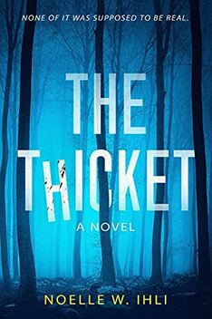
★★★ The ThicketNoelle IhliHorrorRead January 2026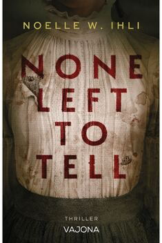
★★★★ None Left To TellNoelle IhliMystery & thrillerRead January 2026★★★ Room For RentNoelle IhliMystery & thrillerRead January 2026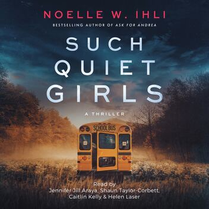
★★★★ Such Quiet GirlsNoelle IhliMystery & thrillerRead January 2026★★★ Where The Drowned Girls GoSeanan McGuireFantasyRead January 2026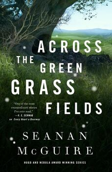
★★★ Across The Green Grass FieldsSeanan McGuireFantasyRead January 2026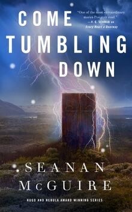
★★★ Come Tumbling DownSeanan McGuireFantasyRead January 2026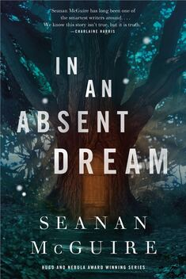
★★★★ In An Absent DreamSeanan McGuireFantasyRead January 2026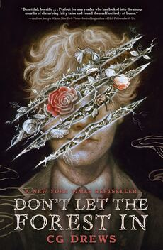
★★★★ Don’t Let The Forest InCG DrewsHorror · Young adultRead January 2026★★★ Beneath the Sugar SkySeanan McGuireFantasyRead January 2026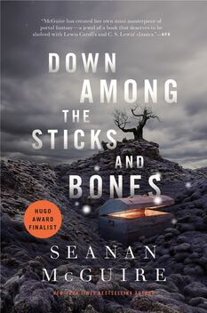
★★★★ Down Among the Sticks and BonesSeanan McGuireFantasyRead January 2026★★★ Run on RedNoelle IhliMystery & thrillerRead January 2026★★★ The Little Book of Data: Understanding the Powerful Analytics that Fuel AI, Make Or Break Careers, and Could Just End Up Saving the WorldJustin EvansTechnologyRead January 2026★★★★★ The Paper Menagerie and Other StoriesKen LiuFantasyRead January 2026★ Mastering Data-Intensive Applications: Building for Scale, Speed, and ResilienceChuck ShermanTechnologyRead January 2026
2025
151 books
★★★★ Ask For AndreaNoelle IhliMystery & thrillerRead December 2025★★★★ A Witch’s Guide to Magical InnkeepingSangu MandannaFantasyRead December 2025★★★ Little Book of Common Sense Investing: The Only Way to Guarantee Your Fair Share of Stock Market ReturnsJohn C. BogleBusiness & moneyRead December 2025★★★★ The Man Who Died Seven TimesYasuhiko NishizawaMystery & thrillerRead December 2025★★ THE PYTHON PROGRAMMER'S SURVIVAL GUIDE: How to Make It Through Coding Without Losing Your Mind, Your Hair or Your Will to LiveMatt JordanTechnologyRead December 2025★★★ Your Money Or Your Life: Transforming Your Relationship with Money and Achieving Financial IndependenceVicki/Joe Robin/DominquezBusiness & moneyRead December 2025★★★ Fluke: Chance, Chaos, and Why Everything We Do MattersBrian KlaasScience & mathRead December 2025★★★ MasteryRobert GreeneSelf-help & psychologyRead November 2025★★★★★ Tidy First? A Personal Exercise in Empirical Software DesignKent BeckTechnologyRead November 2025★★★ The 7 1/2 Deaths of Evelyn HardcastleStuart TurtonMystery & thrillerRead November 2025★★★ Burning Down the House: Talking Heads and the New York Scene That Transformed RockJonathan GouldBiography & memoirRead November 2025★★★ Who Is Government? The Untold Story of Public ServiceMichael LewisPolitics & societyRead November 2025★★★ The Happiness Files: Insights on Work and LifeArthur C. BrooksSelf-help & psychologyRead November 2025★★★★ HorseGeraldine BrooksHistorical fictionRead November 2025★★★ Gray After DarkNoelle H. IhliMystery & thrillerRead November 2025★★★ American Nations: A History of the Eleven Rival Regional Cultures of North AmericaColin WoodardHistoryRead November 2025★★★ The Millionaire Next Door: The Surprising Secrets of America’s WealthyThomas StanleyBusiness & moneyRead November 2025★★★★ Atomic HabitsJames ClearSelf-help & psychologyRead November 2025★★ Blue Mars (Mars Trilogy #3)Kim Stanley RobinsonScience fictionRead October 2025★★★ How to Win Friends and Influence PeopleDale CarnegieSelf-help & psychologyRead October 2025★★★ All That We See or SeemKen LiuScience fictionRead October 2025★DNF 21% Death Takes MeCristina Rivera GarzaLiterary fictionRead October 2025 · stopped at 21%★★★ I See You’ve Called In DeadJohn KenneyLiterary fictionRead October 2025★★★ Long Bright RiverLiz MooreMystery & thrillerRead October 2025★★ The Art of Mindful LivingThich Nhat HanhSelf-help & psychologyRead October 2025★★ Green Mars (Mars Trilogy #2)Kim Stanley RobinsonScience fictionRead October 2025★★ The Mountain Is You: Transforming Self-Sabotage Into Self-MasteryBrianna WeistSelf-help & psychologyRead September 2025★★★ Red Mars (Mars Trilogy #1)Kim Stanley RobinsonScience fictionRead September 2025★★★★ Wishful DrinkingCarrie FisherBiography & memoirRead September 2025★★★ The Burning White (Lightbringer #5)Brent WeeksFantasyRead September 2025★★★★ Coming Up For AirGeorge OrwellLiterary fictionRead September 2025★★★★ Homage to CataloniaGeorge OrwellHistoryRead September 2025★★ The Warded Man (Demon Cycle #1)Peter BrettFantasyRead September 2025★★★★ Spare Parts: Four Undocumented Teenagers, One Ugly Robot, and the Battle for the American DreamJoshua DavisBiography & memoirRead September 2025★★★ The 7 Habits of Highly Effective PeopleStephen R. CoveySelf-help & psychologyRead September 2025★★★ The Art of Frugal Hedonism: A Guide to Spending Less While Enjoying Everything MoreAnnie Raser-RowlandBusiness & moneyRead September 2025★★★ The Woman In The CabinBecca DayMystery & thrillerRead September 2025★★ Red Rising (Red Rising #1)Pierce BrownScience fictionRead September 2025★★★ Tidy The F*ck Up: The American Art of Organizing Your Sh*tMessie CondoSelf-help & psychologyRead August 2025★★★ The Power of Habit: Why We Do What We Do In Life and BusinessCharles DuhiggSelf-help & psychologyRead August 2025★★★ Rebel Girl: My Life as a Feminist PunkKathleen HannaBiography & memoirRead August 2025★★★★ All the Colors of the DarkChris WhitakerMystery & thrillerRead August 2025★★ The Blade Itself (First Law #1)Joe AbercrombieFantasyRead August 2025★★★ Die With Zero: Getting All You Can From Your Money and Your LifeBill PerkinsBusiness & moneyRead August 2025★★★ The Blood Mirror (Lightbringer #4)Brent WeeksFantasyRead August 2025★★★★ The Blinding Knife (Lightbringer #3)Brent WeeksFantasyRead August 2025★★★★ The Broken Eye (Lightbringer #2)Brent WeeksFantasyRead August 2025★★★★ Miss Benson’s BeetleRachel JoyceHistorical fictionRead August 2025★★★ Some Desperate GloryEmily TeshScience fictionRead August 2025★★★ The God of the WoodsLiz MooreMystery & thrillerRead July 2025★★★ Tenth of December: StoriesGeorge SaundersLiterary fictionRead July 2025★★★ The Forever WarJoe HaldemanScience fictionRead July 2025★DNF 30% On Earth We’re Briefly GorgeousOcean VuongLiterary fictionRead July 2025 · stopped at 30%★★★★ Point B: A Teleportation Love StoryDrew MagaryScience fictionRead July 2025★★★ Where the Deer and the Antelope Play: The Pastoral Observations of One Ignorant American Who Loves to Walk OutsideNick OffermanHumorRead July 2025★★★ MaureenRachel JoyceLiterary fictionRead July 2025★★★ The Love Song of Queenie HennessyRachel JoyceLiterary fictionRead July 2025★★ The Left Hand of DarknessUrsula K. Le GuinScience fictionRead July 2025★★★ River of TeethSarah GaileyScience fictionRead July 2025★★ The Perfect MatchDandy SmithMystery & thrillerRead July 2025★★★ One Small MistakeDandy SmithMystery & thrillerRead July 2025★★★ The Wedding VowDandy SmithMystery & thrillerRead July 2025★★★ The Wrong DaughterDandy SmithMystery & thrillerRead July 2025★★★★ The Black Prism (Lightbringer #1)Brent WeeksFantasyRead July 2025★★★ Nine GoblinsT. KingfisherFantasyRead July 2025★★★★ The Unlikely Pilgrimage of Harold FryRachel JoyceLiterary fictionRead July 2025★★★ ThornhedgeT. KingfisherFantasyRead July 2025★★ Small Things Like TheseClaire KeeganLiterary fictionRead July 2025★★ The Wall of StormsKen LiuFantasyRead July 2025★★★ Crowne of Thorne (Cass Leary #0.5)Robin JamesMystery & thrillerRead June 2025★★★ Deadly Defense (Cass Leary #13)Robin JamesMystery & thrillerRead June 2025★★★ The Client List (Cass Leary #12)Robin JamesMystery & thrillerRead June 2025★★ The Golden Enclaves (Scholomance #3)Naomi NovikFantasyRead June 2025★★★ I Have No Mouth and I Must Scream: A Tale of AI Horror and DespairHarlan EllisonScience fictionRead June 2025★DNF 42% Lovers of Dark Humor: Shadows LurkingHash BlinkMystery & thrillerRead June 2025 · stopped at 42%★★★ Bryony and RosesT. KingfisherFantasyRead June 2025★★ Network Effect (Murderbot Diaries #5)Martha WellsScience fictionRead June 2025★★★ The Last Graduate (Scholomance #2)Naomi NovikFantasyRead June 2025★★★ A Deadly Education (Scholomance #1)Naomi NovikFantasyRead June 2025★★★ The History of Sound: StoriesBen ShattuckLiterary fictionRead June 2025★★★ A Sorceress Comes to CallT. KingfisherFantasyRead May 2025★★ The DispossessedUrsula K. Le GuinScience fictionRead May 2025★★ Uncommon Measure: A Journey Through Music, Performance, and the Science of TimeNatalie HodgesMusicRead May 2025★★★ Cultish: The Language of FanatacismAmanda MontellPolitics & societyRead May 2025★★★ Mr. Penumbra’s 24-Hour BookstoreRobin SloanLiterary fictionRead May 2025★★★ Rogue LawyerJohn GrishamMystery & thrillerRead May 2025★★★★ Sourdough: A NovelRobin SloanLiterary fictionRead May 2025★★★ Seasonable Doubt (Cass Leary #11.5)Robin JamesMystery & thrillerRead May 2025★★★ ArmadaErnest ClineScience fictionRead May 2025★★★ Dead Law (Cass Leary #11)Robin JamesMystery & thrillerRead May 2025★★★ Cold Evidence (Cass Leary #10)Robin JamesMystery & thrillerRead May 2025★★★ Guilty Acts (Cass Leary #9)Robin JamesMystery & thrillerRead May 2025★★★ Mercy Kill (Cass Leary #8)Robin JamesMystery & thrillerRead May 2025★★★ First Degree (Cass Leary #7)Robin JamesMystery & thrillerRead May 2025★★★ Imminent Harm (Cass Leary #6)Robin JamesMystery & thrillerRead May 2025★★★ Blood Evidence (Cass Leary #5)Robin JamesMystery & thrillerRead May 2025★★★ Stolen Justice (Cass Leary #4)Robin JamesMystery & thrillerRead May 2025★★★ Devil’s Bargain (Cass Leary #3)Robin JamesMystery & thrillerRead May 2025★★★ Silent Witness (Cass Leary #2)Robin JamesMystery & thrillerRead May 2025★★★ Burden of Truth (Cass Leary #1)Robin JamesMystery & thrillerRead May 2025★★★ Exit Strategy (Murderbot Diaries #4)Martha WellsScience fictionRead May 2025★★★ Ready Player TwoEarnest ClineScience fictionRead April 2025★★★★ The Ballad of Songbirds and SnakesSuzanne CollinsScience fiction · Young adultRead April 2025★★★ The Woman In MeBritney SpearsBiography & memoirRead April 2025★★ Rogue Protocol (Murderbot Diaries #3)Martha WellsScience fictionRead April 2025★★ Artificial Condition (Murderbot Diaries #2)Martha WellsScience fictionRead April 2025★★★ Blob: A Love StoryMaggie SuLiterary fictionRead April 2025★ The GunslingerStephen KingFantasyRead April 2025★★★ How Music WorksDavid ByrneMusicRead April 2025★★ The Gods ThemselvesIsaac AsimovScience fictionRead April 2025★★ Dune MessiahFrank HerbertScience fictionRead April 2025★★★★ Every Heart a DoorwaySeanan McGuireFantasyRead April 2025★★★★ Careless People: A Cautionary Tale of Power, Greed, and Lost Idealism (A Memoir)Sarah Wynn-WilliamsBiography & memoirRead April 2025★★★ All Systems Red (Murderbot Diaries #1)Martha WellsScience fictionRead April 2025★ Binti: HomeNnedi OkoraforScience fictionRead April 2025★★★★ Sunrise on the ReapingSuzanne CollinsScience fiction · Young adultRead April 2025★★★ BintiNnedi OkoraforScience fictionRead April 2025★★★ The Moon Is a Harsh MistressRobert A. HeinleinScience fictionRead April 2025★★★ DuneFrank HerbertScience fictionRead April 2025★★★ Fahrenheit 451Ray BradburyLiterary fictionRead March 2025★★★ Have Spacesuit—Will TravelRobert A. HeinleinScience fiction · Young adultRead March 2025★★★ Grave Whisper (Dresden Files #3)Jim ButcherFantasyRead March 2025★ RingworldLarry NivenScience fictionRead March 2025★★★★ Stranger in a Strange LandRobert A. HeinleinScience fictionRead March 2025★★★ The Mother Tongue: English and How It Got That WayBill BrysonHistoryRead March 2025★★★ Full Moon (Dresden Files #2)Jim ButcherFantasyRead March 2025★★★ Storm Front (Dresden Files #1)Jim ButcherFantasyRead March 2025★★★★ A People’s History of the United States (2003 unabridged)Howard ZinnHistoryRead March 2025★★★ Nettle & BoneT. KingfisherFantasyRead March 2025★★★ The Grace of KingsKen LiuFantasyRead March 2025★★★ The Sirens' Call: How Attention Became the World's Most Endangered ResourceChris HayesPolitics & societyRead March 2025★★★★ The Wandering EarthCixin LiuScience fictionRead March 2025★★ How to Retire the Cheapskate WayJeff YeagerBusiness & moneyRead March 2025★★★ Measure What Matters: How Google, Bono, and the Gates Foundation Rock the World with OKRsJohn DoerrBusiness & moneyRead March 2025★★★ At Home: A Short History of Private LifeBill BrysonHistoryRead March 2025★★★★★ Death’s EndCixin LiuScience fictionRead March 2025★★★ A Short History of Nearly EverythingBill BrysonScience & mathRead February 2025★★★★ Sure, I'll Join Your Cult: A Memoir of Mental Illness and the Quest to Belong AnywhereMaria BamfordBiography & memoirRead February 2025★★★★★ I’m Glad My Mom DiedJennette McCurdyBiography & memoirRead February 2025★★★★★ The Dark ForestCixin LiuScience fictionRead February 2025★★★★★ The Three-Body ProblemCixin LiuScience fictionRead February 2025★★★ The SolimancersElijah JefferyFantasyRead February 2025★★★ The Body: A Guide for OccupantsBill BrysonScience & mathRead February 2025★★★★ A Walk in the Woods: Rediscovering America on the Appalachian TrailBill BrysonBiography & memoirRead February 2025★★★★ The Secret Life of Groceries: The Dark Miracle of the American SupermarketBenjamin LorrPolitics & societyRead February 2025★★★ The Disappearing Spoon: And Other True Tales of Madness, Love, and the History of the World from the Periodic Table of the ElementsSam KeanScience & mathRead January 2025★★★ The Art of WarSun TzuPhilosophyRead January 2025★★★ T-Shirt Swim Club: Stories from Being Fat in a World of Thin PeopleIan and Alisa KarmelBiography & memoirRead January 2025earlier read Getting Things Done: The Art of Stress-Free ProductivityDavid AllenSelf-help & psychologyAlso read 2026earlier read Range: Why Generalists Triumph in a Specialized WorldrangeDavid EpsteinSelf-help & psychologyAlso read 2026earlier read Real Artists Don't Starve: Timeless Strategies for Thriving in the New Creative Age (1)Jeff GoinsBusiness & moneyAlso read 2026
2024
6 books
★★★ NOFX: The Hepatitis Bathtub and Other StoriesJeff PenaltyBiography & memoir★★★★★ Joe vs. The Elan SchoolJoe NobodyBiography & memoir★★★ Immortality: A Love StoryDana SchwartzHistorical fiction · Young adult★★★ Anatomy: A Love StoryDana SchwartzHistorical fiction · Young adult★★★ 2312Kim Stanley RobinsonScience fiction★★★ This Is How You Lose The Time WarAmal /Max El-Motar / GladstoneScience fiction
2023
5 books
2022
2 books
★★★ The Hollow PlacesT. KingfisherHorror★★★★★ The DynamoDB BookAlex DeBrieTechnology
2021
1 book
★★★★ Alexander HamiltonRon ChernowBiography & memoir
2020
1 book
★★★ Freelance Web Development PricingDevon CampbellTechnologyRead January 2020
2019
4 books
2018
4 books
2017
9 books
★★ You Don't Know JS: Up and GoingKyle SimpsonTechnology★★★ Torment Saint: The Life of Elliott SmithWilliam Todd SchultzBiography & memoir★★★★ Hero of AgesBrandon SandersonFantasy★★★★ The Well of AscensionBrandon SandersonFantasy★★★★ MistbornBrandon SandersonFantasy★★★★★ No Man Knows My HistoryFawn McKay BrodieBiography & memoir★★★ The Subtle Art of Not Giving a F*ck: A Counterintuitive Approach to Living a Good LifeMark MansonHumor★★★ Ready Player OneErnest ClineScience fiction★★ New Perspectives on HTML and CSS: ComprehensivePatrick CareyTechnology
2016
9 books
★★★★ Zealot: The Life and Times of Jesus of NazarethReza AslanBiography & memoir★★★ Hold 'Em Poker for Advanced Players (20th Century Edition)David SkalnskySelf-help & psychology★★★ A Clergyman's DaughterGeorge OrwellLiterary fiction★★★★ Burmese DaysGeorge OrwellHistorical fiction★★★★ Down and Out in Paris and LondonGeorge OrwellBiography & memoir★★★★★ 1984George OrwellLiterary fictionAlso read 2009, 2005, 2003, 2002, 2001★★★★ The HikeDrew MagaryFantasy★★★ Lord of the FliesWilliam GoldingLiterary fiction★★★ Starting Out With C++: From Control Structures through Objects (sixth edition)Tony GaddisTechnology
2015
3 books
2014
5 booksdates estimated
2013
6 booksdates estimated
2012
25 booksdates estimated
★★★ The Glass Castle: A MemoirJeannette WallsBiography & memoir★★★ Civil DisobedienceHenry David ThoreauPhilosophy★★★ When You Are Engulfed in FlamesDavid SedarisHumor★★DNF Bhagavad Gita: As It IsA.C. Bhaktivedanta Swami PrabhupadaReligionDid not finish★★★ Davita's HarpChaim PotokLiterary fiction★★★ The Book of LightsChaim PotokLiterary fiction★★★ My Name is Asher LevChaim PotokLiterary fiction★★★★ The PromiseChaim PotokLiterary fiction★★★ A Whack in the Side of the HeadRoger von OechSelf-help & psychology★★★ Fevre DreamGeorge R.R. MartinHorror★★★ The Shadow RisingRobert JordanFantasy★★★ The Dragon RebornRobert JordanFantasy★★★ The Great HuntRobert JordanFantasy★★★ The Eye of the WorldRobert JordanFantasy★★★ New SpringRobert JordanFantasy★★★ The Innocent ManJohn GrishamMystery & thriller★★★ The Last JurorJohn GrishamMystery & thriller★★★ The PartnerJohn GrishamMystery & thriller★★★ Eye of the NeedleKen FollettMystery & thriller★★★ JackdawsKen FollettHistorical fiction★★★ Night Over WaterKen FollettMystery & thriller★★★ Crime and PunishmentFyodor DostoevskyLiterary fiction★★★ Children of the MindOrson Scott CardScience fiction★★★ Dead HeatDick & Felix FrancisMystery & thriller★★★ XenocideOrson Scott CardScience fiction
2011
28 booksdates estimated
★★★★ Speaker for the DeadOrson Scott CardScience fiction★★★★ Ender's GameOrson Scott CardScience fiction★★★ The Book ThiefMarkus ZusakHistorical fiction · Young adult★★★ Style Manual 2008: An official guide to the form and style of Federal Government printingU.S. Government Printing OfficeReference★★★ Note By Note: A Celebration of the Piano LessonTricia TunstallMusic★★ The Fellowship of the RingJ.R.R. TolkienFantasy★★★★ Harry Potter and the Deathly HallowsJ.K. RowlingFantasy · Young adultAlso read 2008, 2007★★★★★ Harry Potter and the Half-Blood PrinceJ.K. RowlingFantasy · Young adultAlso read 2008, 2005★★★ Harry Potter and the Order of the PhoenixJ.K. RowlingFantasy · Young adultAlso read 2005, 2003★★★★★ Harry Potter and the Goblet of FireJ.K. RowlingFantasy · Children'sAlso read 2005, 2001, 2000★★★★★ Harry Potter and the Prisoner of AzkabanJ.K. RowlingFantasy · Children'sAlso read 2005, 2001, 2000, 1999★★★★ Harry Potter and the Chamber of SecretsJ.K. RowlingFantasy · Children'sAlso read 2005, 2001, 2000, 1999★★★★★ Harry Potter and the Sorcerer's StoneJ.K. RowlingFantasy · Children'sAlso read 2005, 2001, 2000, 1999★★★ The Wise Man's FearPatrick RothfussFantasy★★★★ The Name of the WindPatrick RothfussFantasy★★★ The Last OlympianRick RiordanFantasy · Children's★★★ The Battle of the LabyrinthRick RiordanFantasy · Children's★★★ The Titan's CurseRick RiordanFantasy · Children's★★★ The Sea of MonstersRick RiordanFantasy · Children's★★★ The Lightning ThiefRick RiordanFantasy · Children's★★★★ A Dance with DragonsGeorge R.R. MartinFantasy★★★★ 365 Thank Yous: The Year a Simple Act of Daily Gratitude Changed My LifeJohn KralikBiography & memoir- The Green Ring
★★★ The Green RingAurie JefferyFantasy ★★★ The BrethrenJohn GrishamMystery & thriller★★★★ Waiter Rant: Thanks for the Tip--Confessions of a Cynical WaiterSteve DublanicaBiography & memoir★★★★ Keep the Change: A Clueless Tipper's Quest to Become the Guru of the GratuitySteve DublanicaBusiness & money★★★ The Brothers KaramazovFyodor DostoevskyLiterary fiction★★★ Millionaire Fastlane: Crack the Code to Wealth and Live Rich for a Lifetime!M.J. DeMarcoBusiness & money
2010
34 booksdates estimated
★★ Undead and UnwedMary Janice DavidsonFantasy★★★ A Hard Day's Write: The Stories Behind Every Beatles SongSteve TurnerBiography & memoir★★★ Badass: The Birth of a LegendBen ThompsonHistory★DNF Tome of the UndergatesSam SykesFantasyDid not finish★★★★ What Does Somebody Have to Do to Get a Job Around Here?: 44 Insider Tips That Will Get You HiredCynthia ShapiroBusiness & money★★★ The Vampire ArmandAnne RiceHorror★★★ Memnoch, The DevilAnne RiceHorror★★★★ A Feast for CrowsGeorge R.R. MartinFantasy★★★★★ A Storm of SwordsGeorge R.R. MartinFantasy★★★★★ A Clash of KingsGeorge R.R. MartinFantasy★★★★★ A Game of ThronesGeorge R.R. MartinFantasy★★★ All is WellGerald N. LundHistorical fictionAlso read 2000★★★ So Great a CauseGerald N. LundHistorical fictionAlso read 2000★★★ No Unhallowed HandGerald N. LundHistorical fictionAlso read 2000★★★ Praise to the ManGerald N. LundHistorical fictionAlso read 2000★★★ Target PracticeRex StoutMystery & thriller★★★ A Season of JoyGerald N. LundHistorical fictionAlso read 2000★★★ Thy Gold to RefineGerald N. LundHistorical fictionAlso read 2000★★★ Truth Will PrevailGerald N. LundHistorical fictionAlso read 2000★★★ Like a Fire is BurningGerald N. LundHistorical fictionAlso read 2000★★★ A Pillar of LightGerald N. LundHistorical fictionAlso read 2000★★ The Zen of Zombie: Better Living Through the UndeadScott KenemoreHumor★★★ The Old Man and the SeaErnest HemingwayLiterary fiction★★★ The FirmJohn GrishamMystery & thriller★★★★ A Time To KillJohn GrishamMystery & thriller★★★ A Place Called FreedomKen FollettHistorical fiction★★★★ A Dangerous FortuneKen FollettHistorical fiction★★★★ World Without EndKen FollettHistorical fiction★★★★ MockingjaySuzanne CollinsScience fiction · Young adult★★★★★ Catching FireSuzanne CollinsScience fiction · Young adult★★★★★ The Hunger GamesSuzanne CollinsScience fiction · Young adult★★ The Best of BensonLee BensonSports★★★ The High KingLloyd AlexanderFantasy · Children's★★★ Taran WandererLloyd AlexanderFantasy · Children's
2009
20 booksdates estimated
★★★ The Castle of LlyrLloyd AlexanderFantasy · Children's★★★ The Black CauldronLloyd AlexanderFantasy · Children's★★★ The Book of ThreeLloyd AlexanderFantasy · Children's★★ The Abs Diet: The Six-Week Plan to Flatten Your Stomach and Keep You Lean for LifeDavid ZinczenkoSelf-help & psychology★★★★★ Nine StoriesJ.D. SalingerLiterary fictionAlso read 2007, 2000★★★ The Tale of the Body ThiefAnne RiceHorror★★★ Queen of the DamnedAnne RiceHorror★★★ Mere ChristianityC.S. LewisReligion★★★ The Screwtape LettersC.S. LewisReligion★ Jannach's German for Reading KnowledgeRichard Alan KorbReference★★★★★ Pillars of the EarthKen FollettHistorical fictionAlso read 2001★★★★ Extremely Loud and Incredibly CloseJonathan Safran FoerLiterary fiction★★★ The AlchemistPaulo CoelhoLiterary fiction- Hafez: Erfan and Music
★★ Hafez: Erfan and MusicMargaret L. CatonMusic ★★★ The Nonexistent Knight & The Cloven ViscountItalo CalvinoLiterary fiction★★★ The Castle of Crossed DestiniesItalo CalvinoLiterary fiction★★★★ JunkyWilliam S. BurroughsLiterary fictionAlso read 2007, 2005, 2003, 2002, 2001★★★ The Lost SymbolDan BrownMystery & thriller★★★ Reservation BluesSherman AlexieLiterary fictionearlier read 1984George OrwellLiterary fictionAlso read 2016, 2005, 2003, 2002, 2001
2008
21 booksdates estimated
★★★ FlightSherman AlexieLiterary fiction★★★ The Tales of Beedle the BardJ.K. RowlingFantasy · Children's★★ Elements of Music (2nd Edition)Joseph N. StrausMusic★★ Introduction to Post-Tonal TheoryJoseph N. StrausMusic★★ Mozart: His Life and MusicJeremy SiepmannBiography & memoir★★ Beethoven: His Life and MusicJeremy SiepmannBiography & memoir- Let Jasmine Rain Down: Song and Remembrance among Syrian Jews
★★ Let Jasmine Rain Down: Song and Remembrance among Syrian JewsKay Kaufman ShelemayMusic ★★★ Sonata Forms (seventh edition)Charles RosenMusic★★★ Teaching Approaches in Music Theory: An Overview of Pedagogical PhilosophiesMichael R. RogersMusic★★★ The Vampire LestatAnne RiceHorror★★ Making Music in the Arab World: The Culture and Artistry of TarabA.J. RacyMusic★★ Modal and Tonal Counterpoint: From Josquin to StravinskyHarold OwenMusic★★★ Wicked: The Life and Times of the Wicked Witch of the WestGregory MaguireFantasy★★ Hundred Thousand Fools of God, The: Musical Travels in Central Asia (and Queens, New York)Theodore LevinMusic★★ Tonal HarmonyStefan & Dorothy Kostka & PayneMusic★★★★ Les MiserablesVictor HugoHistorical fiction★★★ A Thousand Rising SunsKhaled HosseiniLiterary fiction★★ A Practical Approach to Sixteenth-Century CounterpointRobert GauldinMusic★★★ Analysis of Tonal Music: A Schenkerian ApproachAllen CadwalladerMusicearlier read Harry Potter and the Deathly HallowsJ.K. RowlingFantasy · Young adultAlso read 2011, 2007earlier read Harry Potter and the Half-Blood PrinceJ.K. RowlingFantasy · Young adultAlso read 2011, 2005
2007
31 booksdates estimated
★★★ Through the Looking GlassLewis CarrollFantasy · Children's★★★ Alice's Adventures in WonderlandLewis CarrollFantasy · Children's★★★ Eight Men Out: The Black Sox and the 1919 World SeriesEliot AsinofSports★★DNF 17% Structural Functions of Harmony (Revised Edition)Arnold SchoenbergMusicStopped at 17%★★★ The Adventures of Huckleberry FinnMark TwainLiterary fiction★★★ The Wonderful OJames ThurberHumor · Children's★★★ The Thurber CarnivalJames ThurberHumor★★★ Thurber on CrimeJames ThurberHumor★★★ It Ain't Over 'Til It's Over: The Baseball Prospectus Pennant Race BookThe Baseball Prospectus Team of ExpertsSports★★★ Economic Botany: Plants in our WorldBeryl SimpsonScience & math★★★ The Definitive Biography of PDQ BachPeter SchickeleHumor★★★ The Psychology of Baseball: Inside the Mental Game of the Major League PlayerMike StadlerSports★★★ Crazy '08: How a Cast of Cranks, Rogues, Boneheads, and Magnates Created the Greatest Year in Baseball HistoryCait N. MurphySports★★★ Catcher in the RyeJ.D. SalingerLiterary fictionAlso read 2005★★★ Opening Day: The Story of Jackie Robinson's First SeasonJonathan EigSports★★★★ The Cheater's Guide to BaseballDerek ZumstegSports★★★★ Raise High The Roofbeam, Carpenters & Seymour, An IntroductionJ.D. SalingerLiterary fictionAlso read 2005★★ Watching Baseball Smarter: A Professional Fan's Guide for Beginners, Semi-experts, and Deeply Serious GeeksZack HampleSports★★★ The Baseball Economist: The Real Game ExposedJ.C. BradburySports★★★★ Franny & ZooeyJ.D. SalingerLiterary fictionAlso read 2005★★★ The Year Babe Ruth Hit 104 Home Runs: Recrowning Baseball's Greatest SluggerBill JeckinsonSports★★ The Great New York Sports Debate: Two New York Sportswriters Go Head-to-Head on the 50 Most Heated QuestionsRoger & David Rubin & LennonSports★★★★ Interview With The VampireAnne RiceHorror★★★★ The New Bill James Historical Baseball AbstractBill JamesSports★★★ The Mind of Bill James: How a Complete Outsider Changed BaseballScott GraySports★★★★ The Princess Bride: S. Morgenstern's Classic Tale of True Love and High AdventureWilliam GoldmanFantasyAlso read 2001★★★ The Study of CounterpointJohn J. FuxMusic★★★ Creating an Empire: ESPN - The No-Holds-Barred Story of Power, Ego, Money, and Vision That Transformed a CultureStuart EveySportsearlier read Harry Potter and the Deathly HallowsJ.K. RowlingFantasy · Young adultAlso read 2011, 2008earlier read JunkyWilliam S. BurroughsLiterary fictionAlso read 2009, 2005, 2003, 2002, 2001earlier read Nine StoriesJ.D. SalingerLiterary fictionAlso read 2009, 2000
2006
28 books
★★★★ The Wonderful Story of Henry Sugar and Six MoreRoald DahlFantasy · Children'sAlso read 2001, 1998, 1996★★★ Fantasyland: A Sportswriter's Obsessive Bid to Win the World's Most Ruthless Fantasy Baseball LeagueSam WalkerSports★★ The Well-Tempered Keyboard TeacherMarienne UszlerMusic★★ On the Track: A Guide to Contemporary Film Scoring, Second EditionFred KarlinMusic★★★ The RoadCormac McCarthyLiterary fiction★★★★ The ChosenChaim PotokLiterary fictionAlso read 2001★★★ The Harvard Dictionary of MusicDon Michael RandelMusicRead October 2006★★★ The Bronx Zoo: The Astonishing Inside Story of the 1978 World Champion New York YankeesSparky LyleSports★★★★★ Moneyball: The Art of Winning an Unfair GameMichael LewisSports★★ The Baseball Uncyclopedia: A Highly Opinionated, Myth-Busting Guide to the Great American GameMichael KunSports★★★ On The RoadJack KerouacLiterary fictionAlso read 2002★★★ The Head Game: Baseball Seen from the Pitcher's MoundRoger KahnSports★★ The Little Big Book of BaseballHiro Clark WakabayashiSports★★★★★ Baseball Between the Numbers: Why Everything You Know About the Game Is WrongThe Baseball Prospectus Team of ExpertsSports★★ The Big Book of Baseball BrainteasersDom ForkerSports★★ Madame BovaryGustave FlaubertLiterary fiction★★ The Great GatsbyF. Scott FitzgeraldLiterary fiction★★★ Game of Shadows: Barry Bonds, Balco, and the Steroids Scandal That Rocked Professional SportsMark Fainaru-WadaSports★★★ Contempt of Court: The Turn-of-the-Century Lynching That Launched a Hundred Years of FederalismMark CurridenHistory★★★ Babe: The Legend Comes to LifeRobert CreamerSports★★★ 27 Men Out: Baseball's Perfect GamesMichael CoffeySports★★ Techniques of the Contemporary ComposerDavid CopeMusic★★★ The Musician's Guide to Theory and AnalysisJane Piper & Elizabeth West Clendinning & MarvinMusic★★★ Juiced: Wild Times, Rampant 'Roids, Smash Hits, and How Baseball Got BigJose CansecoSports★★★ A Citrus TestObrey BrownSports★★★ Angels and DemonsDan BrownMystery & thriller★★★ The Da Vinci CodeDan BrownMystery & thrillerearlier read Brave New WorldAldous HuxleyLiterary fictionAlso read 2026
2005
24 booksdates estimated
★★★ Ball FourJim BoutonSports★★★ Room Full of Mirrors: A Biography of Jimi HendrixCharles R. CrossBiography & memoir★★★★ DraculaBram StokerHorrorAlso read 2002★★★★ Please Kill Me: The Uncensored Oral History of PunkLegs & Gillian McNeil & McCainBiography & memoirAlso read 2003, 2002, 2001★★★ Tales from the San Francisco Giants DugoutNick PetersSports★★★★ Many WatersMadeleine L'EngleFantasy · Children'sAlso read 2001, 1999, 1998★★★ Music for Piano: A Short HistoryF.E. KirbyMusic★★ The Technique of Orchestration (6th Edition)Kent KennanMusic★★★ Privilege, Power, and DifferenceAllan JohnsonPolitics & society★★★ Concise History of Western Music, Second EditionBarbara Rusano HanningMusic★★ The Book on the BookBill FelberSports★★★★ The Good EarthPearl S. BuckHistorical fictionAlso read 2001★★★ Juicing the Game: Drugs, Power, and the Fight for the Soul of Major League BaseballHoward BryantSportsearlier read 1984George OrwellLiterary fictionAlso read 2016, 2009, 2003, 2002, 2001earlier read Catcher in the RyeJ.D. SalingerLiterary fictionAlso read 2007earlier read Franny & ZooeyJ.D. SalingerLiterary fictionAlso read 2007earlier read Harry Potter and the Chamber of SecretsJ.K. RowlingFantasy · Children'sAlso read 2011, 2001, 2000, 1999earlier read Harry Potter and the Goblet of FireJ.K. RowlingFantasy · Children'sAlso read 2011, 2001, 2000earlier read Harry Potter and the Half-Blood PrinceJ.K. RowlingFantasy · Young adultAlso read 2011, 2008earlier read Harry Potter and the Order of the PhoenixJ.K. RowlingFantasy · Young adultAlso read 2011, 2003earlier read Harry Potter and the Prisoner of AzkabanJ.K. RowlingFantasy · Children'sAlso read 2011, 2001, 2000, 1999earlier read Harry Potter and the Sorcerer's StoneJ.K. RowlingFantasy · Children'sAlso read 2011, 2001, 2000, 1999earlier read JunkyWilliam S. BurroughsLiterary fictionAlso read 2009, 2007, 2003, 2002, 2001earlier read Raise High The Roofbeam, Carpenters & Seymour, An IntroductionJ.D. SalingerLiterary fictionAlso read 2007
2004
10 booksdates estimated
★★★★ Life ExpectancyDean KoontzMystery & thriller★★ A Short Guide to Writing About MusicJonathan BellmanMusic★★ Johnny Got His GunDalton TrumboHistorical fiction★★★ The Economics of Public IssuesRoger LeRoy MillerPolitics & society★★ Lennon in America: 1971-1980, Based in Part on the Lost Lennon DiariesGeoffrey GiulianoBiography & memoir★★★★ Nickel and Dimed: On Getting by in America (Spare Change?)Barbara EhrenreichPolitics & society★★★ Excursions in World MusicCharles CapwellMusic★★★ SmokescreenDick FrancisMystery & thriller★★★ The Unfinished Nation: A Concise History of the American People To 1877Alan BrinkleyHistory★★★ The EdgeDick FrancisMystery & thriller
2003
18 booksdates estimated
★★★ Principles of MarketingGary & Philip Armstrong & KotlerBusiness & money★★★★ StargirlJerry SpinelliLiterary fiction · Young adultAlso read 2002, 2001, 2000★★★ Paul McCartney: Many Years From NowBarry MilesBiography & memoir★★★ The Beatles: An Oral HistoryAlan LysaghtBiography & memoir★★★ The Phantom of the OperaGaston LerouxHorror★★★ LoamhedgeBrian JacquesFantasy · Children's★★★ The Kite RunnerKhaled HosseiniLiterary fiction★★★ The Autobiography of Benjamin FranklinBenjamin FranklinBiography & memoir★★★ Narrative of the Life of Frederick Douglass: An American Slave, Written by HimselfFrederick DouglassBiography & memoir★★★ To The HiltDick FrancisMystery & thriller★★★ Old Gods Almost Dead The 40-Year Odyssey of the Rolling StonesStephen DavisBiography & memoir★★★ BankerDick FrancisMystery & thriller★ The Naked LunchWilliam S. BurroughsLiterary fiction★★★ 10 lb. PenaltyDick FrancisMystery & thrillerearlier read 1984George OrwellLiterary fictionAlso read 2016, 2009, 2005, 2002, 2001earlier read Harry Potter and the Order of the PhoenixJ.K. RowlingFantasy · Young adultAlso read 2011, 2005earlier read JunkyWilliam S. BurroughsLiterary fictionAlso read 2009, 2007, 2005, 2002, 2001earlier read Please Kill Me: The Uncensored Oral History of PunkLegs & Gillian McNeil & McCainBiography & memoirAlso read 2005, 2002, 2001
2002
24 booksdates estimated
★★★ Jagger UnauthorizedChristopher AndersonBiography & memoir★★★ He, She, and ItMarge PiercyScience fiction★★★ Stone AloneBill WymanBiography & memoir★DNF The Electric Kool-Aid Acid TestTom WolfeHistoryDid not finish★★★ Madonna: An Intimate BiographyJ. Randy TaraborrelliBiography & memoir★★★ Appetite for Destruction: The Days of Guns N' RosesDanny SugermanBiography & memoir★★★ Dr. Jekyll & Mr. HydeRobert Louis StevensonHorror★★★ LoserJerry SpinelliLiterary fiction · Children's★★★ FrankensteinMary ShelleyHorror★★★ Cry, The Beloved CountryAlan PatonLiterary fiction★★★ Jesus' SonDenis JohnsonLiterary fiction★★★ No One Here Gets Out Alive: The Biography of Jim MorrisonJerry & Danny Hopkins & SugermanBiography & memoir★★★ The Lizard King: The Essential Jim MorrisonJerry HopkinsBiography & memoir★★★ The Lost Beatles InterviewsGeoffrey GiulianoBiography & memoir★★★ Hammer of the Gods: The Led Zeppelin SagaStephen DavisBiography & memoir★★★ Walk This Way: The Autobiography of AerosmithStephen DavisBiography & memoir★★★ Heavier Than Heaven: A Biography of Kurt CobainCharles R. CrossBiography & memoir★★★ The Ox-Bow IncidentWalter van Tilburg ClarkHistorical fictionearlier read 1984George OrwellLiterary fictionAlso read 2016, 2009, 2005, 2003, 2001earlier read DraculaBram StokerHorrorAlso read 2005earlier read JunkyWilliam S. BurroughsLiterary fictionAlso read 2009, 2007, 2005, 2003, 2001earlier read On The RoadJack KerouacLiterary fictionAlso read 2006earlier read Please Kill Me: The Uncensored Oral History of PunkLegs & Gillian McNeil & McCainBiography & memoirAlso read 2005, 2003, 2001earlier read StargirlJerry SpinelliLiterary fiction · Young adultAlso read 2003, 2001, 2000
2001
24 booksdates estimated
★★★ Go Ask AliceAnonymousLiterary fiction · Young adult★★★ Joseph and the Amazing Technicolor DreamcoatTim RicePlays & scripts★★★ Conversations of SocratesXenophonPhilosophy★★★ Zen Mind, Beginner's MindShunryu SuzukiReligion★★★ All Quiet on the Western FrontErich Maria RemarqueHistorical fiction★★★★ Animal FarmGeorge OrwellLiterary fiction★★★ Tao Te ChingLao-TzuReligion★★★ TaggerungBrian JacquesFantasy · Children's★★★ In the Eye of the StormJohn H. GrobergBiography & memoir★★★ Peace Like a RiverLeif EngerLiterary fictionearlier read 1984George OrwellLiterary fictionAlso read 2016, 2009, 2005, 2003, 2002earlier read Harry Potter and the Chamber of SecretsJ.K. RowlingFantasy · Children'sAlso read 2011, 2005, 2000, 1999earlier read Harry Potter and the Goblet of FireJ.K. RowlingFantasy · Children'sAlso read 2011, 2005, 2000earlier read Harry Potter and the Prisoner of AzkabanJ.K. RowlingFantasy · Children'sAlso read 2011, 2005, 2000, 1999earlier read Harry Potter and the Sorcerer's StoneJ.K. RowlingFantasy · Children'sAlso read 2011, 2005, 2000, 1999earlier read JunkyWilliam S. BurroughsLiterary fictionAlso read 2009, 2007, 2005, 2003, 2002earlier read Many WatersMadeleine L'EngleFantasy · Children'sAlso read 2005, 1999, 1998earlier read Pillars of the EarthKen FollettHistorical fictionAlso read 2009earlier read Please Kill Me: The Uncensored Oral History of PunkLegs & Gillian McNeil & McCainBiography & memoirAlso read 2005, 2003, 2002earlier read StargirlJerry SpinelliLiterary fiction · Young adultAlso read 2003, 2002, 2000earlier read The ChosenChaim PotokLiterary fictionAlso read 2006earlier read The Good EarthPearl S. BuckHistorical fictionAlso read 2005earlier read The Princess Bride: S. Morgenstern's Classic Tale of True Love and High AdventureWilliam GoldmanFantasyAlso read 2007earlier read The Wonderful Story of Henry Sugar and Six MoreRoald DahlFantasy · Children'sAlso read 2006, 1998, 1996
2000
24 booksdates estimated
★★★ Hitchhiker's Guide to the GalaxyDouglas AdamsScience fiction★★★ Gathering BlueLois LowryScience fiction · Young adult★★★ Big RiverWilliam HauptmanPlays & scripts★★★ You Can’t Take It With YouGeorge S. & Moss Kaufman & HartPlays & scripts★★★ The Legend of LukeBrian JacquesFantasy · Children's★★★ Dangerous Angels (Weetzie Bat Collection)Francesca Lia BlockFantasy · Young adult★★★ Of Mice and MenJohn SteinbeckLiterary fiction★★★ HolesLouis SacharLiterary fiction · Children's★★★ The Diary of a Young GirlAnne FrankBiography & memoirearlier read A Pillar of LightGerald N. LundHistorical fictionAlso read 2010earlier read A Season of JoyGerald N. LundHistorical fictionAlso read 2010earlier read All is WellGerald N. LundHistorical fictionAlso read 2010earlier read Harry Potter and the Chamber of SecretsJ.K. RowlingFantasy · Children'sAlso read 2011, 2005, 2001, 1999earlier read Harry Potter and the Goblet of FireJ.K. RowlingFantasy · Children'sAlso read 2011, 2005, 2001earlier read Harry Potter and the Prisoner of AzkabanJ.K. RowlingFantasy · Children'sAlso read 2011, 2005, 2001, 1999earlier read Harry Potter and the Sorcerer's StoneJ.K. RowlingFantasy · Children'sAlso read 2011, 2005, 2001, 1999earlier read Like a Fire is BurningGerald N. LundHistorical fictionAlso read 2010earlier read Nine StoriesJ.D. SalingerLiterary fictionAlso read 2009, 2007earlier read No Unhallowed HandGerald N. LundHistorical fictionAlso read 2010earlier read Praise to the ManGerald N. LundHistorical fictionAlso read 2010earlier read So Great a CauseGerald N. LundHistorical fictionAlso read 2010earlier read StargirlJerry SpinelliLiterary fiction · Young adultAlso read 2003, 2002, 2001earlier read Thy Gold to RefineGerald N. LundHistorical fictionAlso read 2010earlier read Truth Will PrevailGerald N. LundHistorical fictionAlso read 2010
1999
13 booksdates estimated
★★★ Sex, Drugs, Rock & RollEric BogosianPlays & scripts★★★★ Star Wars: The Essential Guide to Vehicles and VesselsBill SmithScience fiction★★★ X-Wing: Wraith Squadron (Rogue Squadron #5)Aaron AllstonScience fiction★★★ Once Upon a MattressJay, Marshall & Dean Thompson, Barer & FullerPlays & scripts★★★★★ Rifles for WatieHarold KeithHistorical fiction · Children'sAlso read 1998, 1997, 1996★★★ X-Wing: The Bacta War (Rogue Squadron #4)Michael A. StackpoleScience fiction★★★ The View from SaturdayE.L. KonigsburgLiterary fiction · Children's★★★ The Best School Year EverBarbara RobinsonHumor · Children'sAlso read 1996★★★ To Kill a MockingbirdHarper LeeLiterary fictionearlier read Harry Potter and the Chamber of SecretsJ.K. RowlingFantasy · Children'sAlso read 2011, 2005, 2001, 2000earlier read Harry Potter and the Prisoner of AzkabanJ.K. RowlingFantasy · Children'sAlso read 2011, 2005, 2001, 2000earlier read Harry Potter and the Sorcerer's StoneJ.K. RowlingFantasy · Children'sAlso read 2011, 2005, 2001, 2000earlier read Many WatersMadeleine L'EngleFantasy · Children'sAlso read 2005, 2001, 1998
1998
14 booksdates estimated
★★★ Starship TroopersRobert A. HeinleinScience fiction★★★ The Best Christmas Pageant EverBarbara RobinsonHumor · Children'sAlso read 1996★★★ Best Christmas Pageant Ever (Reader’s Theatre Adaptation)Barbara RobinsonPlays & scripts · Children's★★★ The Canterville GhostTim KellyPlays & scripts · Young adult★★DNF Watership DownRichard AdamsFantasy · Children'sDid not finish★★ You’re a Good Man, Charlie BrownClark GesnerPlays & scripts★★★ The Long PatrolBrian JacquesFantasy · Children's★★★ MarlfoxBrian JacquesFantasy · Children's★★★ The Pearls of LutraBrian JacquesFantasy · Children's★★★ Outcast of RedwallBrian JacquesFantasy · Children's★★★ Mariel of RedwallBrian JacquesFantasy · Children'searlier read Many WatersMadeleine L'EngleFantasy · Children'sAlso read 2005, 2001, 1999earlier read Rifles for WatieHarold KeithHistorical fiction · Children'sAlso read 1999, 1997, 1996earlier read The Wonderful Story of Henry Sugar and Six MoreRoald DahlFantasy · Children'sAlso read 2006, 2001, 1996
1997
13 booksdates estimated

★★★ The Key to the IndianLynne Reid BanksFantasy · Children's★★★ Stuart Little (stage adaptation)Joseph RobinettePlays & scripts · Children's★★ The Happy TimeSamuel TaylorPlays & scripts · Children's★★★ GodspellJohn-Michael TebelakPlays & scripts
★★★ The BellmakerBrian JacquesFantasy · Children's★★★ The Grey KingSusan CooperFantasy · Children's★★★★ Martin the WarriorBrian JacquesFantasy · Children's★★★ GreenwitchSusan CooperFantasy · Children's★★★ The Dark is RisingSusan CooperFantasy · Children's★★★★ SalamandastronBrian JacquesFantasy · Children's★★★ The GiverLois LowryScience fiction · Young adult★★★ Over Sea, Under StoneSusan CooperFantasy · Children'searlier read Rifles for WatieHarold KeithHistorical fiction · Children'sAlso read 1999, 1998, 1996
1996
13 booksdates estimated
★★★★ MossflowerBrian JacquesFantasy · Children's★★★ The Jungle Book (Disney film script)Larry ClemmonsPlays & scripts · Children's★★★ The Music ManMeredith WillsonPlays & scripts★★★ The Remarkable Mr. PennypackerLiam O’BrienPlays & scripts★★★★ MattimeoBrian JacquesFantasy · Children's★★★ Danny, Champion of the WorldRoald DahlLiterary fiction · Children's★★★★ Johnny TremainEsther ForbesHistorical fiction · Children's★★★ Where the Red Fern GrowsWilson RawlsLiterary fiction · Children's★★★★★ RedwallBrian JacquesFantasy · Children'searlier read Rifles for WatieHarold KeithHistorical fiction · Children'sAlso read 1999, 1998, 1997earlier read The Best Christmas Pageant EverBarbara RobinsonHumor · Children'sAlso read 1998earlier read The Best School Year EverBarbara RobinsonHumor · Children'sAlso read 1999earlier read The Wonderful Story of Henry Sugar and Six MoreRoald DahlFantasy · Children'sAlso read 2006, 2001, 1998
1995
14 booksdates estimated
★★★★ More Adventures of the Great Brain (Great Brain #2)John D. FitzgeraldHistorical fiction · Children's★★★★ Me and My Little Brain (Great Brain #3)John D. FitzgeraldHistorical fiction · Children's★★★★ The Great Brain at the Academy (Great Brain #4)John D. FitzgeraldHistorical fiction · Children's★★★★ The Great Brain Reforms (Great Brain #5)John D. FitzgeraldHistorical fiction · Children's★★★ Oliver!Lionel BartPlays & scripts★★★ Half MagicEdward EagerFantasy · Children's★★DNF Prince CaspianC.S. LewisFantasy · Children'sDid not finish★★★ Charlie and the Great Glass ElevatorRoald DahlScience fiction · Children's★★★ The Lion, The Witch, and The WardrobeC.S. LewisFantasy · Children's★★★★ Charlie and the Chocolate FactoryRoald DahlFantasy · Children's★★★ Peter PanJ.M. BarriePlays & scripts★★★ The HobbitJ.R.R. TolkienFantasy · Children's★★★ James and the Giant PeachRoald DahlFantasy · Children's★★★ A Wrinkle in TimeMadeleine L'EngleScience fiction · Children's
1994
13 booksdates estimated
★★★★ The Great Brain (Great Brain #1)John D. FitzgeraldHistorical fiction · Children's★★★ The Mystery of the CupboardLynne Reid BanksFantasy · Children's★★★ The Secret of the IndianLynne Reid BanksFantasy · Children's★★★ Summer of the MonkeysWilson RawlsLiterary fiction · Children's★★★ Maniac MageeJerry SpinelliLiterary fiction · Children's★★★ The Return of the IndianLynne Reid BanksFantasy · Children's★★★ The Hardy Boys: The Mystery of Cabin IslandFranklin W. DixonMystery & thriller · Children's★★★ Catcher with a Glass ArmMatt ChristopherSports · Children's★★★ The Hardy Boys: The Secret of the CavesFranklin W. DixonMystery & thriller · Children's★★★★ Island of the Blue DolphinsScott O'DellHistorical fiction · Children's★★★ The Hardy Boys: The Shore Road MysteryFranklin W. DixonMystery & thriller · Children's★★★ The Hardy Boys: Hunting for Hidden GoldFranklin W. DixonMystery & thriller · Children's★★★ The Indian in the CupboardLynne Reid BanksFantasy · Children's
1993
14 booksdates estimated
★★★ AnnieThomas MeehanPlays & scripts★★★ The Hardy Boys: The Missing ChumsFranklin W. DixonMystery & thriller · Children's★★★ The Hardy Boys: The Seccret of the Old MillFranklin W. DixonMystery & thriller · Children's★★★ Charlotte's WebE.B. WhiteFantasy · Children's★★★ The Hardy Boys: The House on the CliffFranklin W. DixonMystery & thriller · Children's★★★ Where the Sidewalk EndsShel SilversteinHumor · Children's★★★ The Hardy Boys: The Tower TreasureFranklin W. DixonMystery & thriller · Children's★★★ The Woodshed Mystery (Boxcar Children #7)Gertrude Chandler WarnerMystery & thriller · Children's★★★ Blue Bay Mystery (Boxcar Children #6)Gertrude Chandler WarnerMystery & thriller · Children's★★★ Mike's Mystery (Boxcar Children #5)Gertrude Chandler WarnerMystery & thriller · Children's★★★ Mystery Ranch (Boxcar Children #4)Gertrude Chandler WarnerMystery & thriller · Children's★★★ The Yellow House Mystery (Boxcar Children #3)Gertrude Chandler WarnerMystery & thriller · Children's★★★ Surprise Island (Boxcar Children #2)Gertrude Chandler WarnerMystery & thriller · Children's★★★ The Boxcar Children (Boxcar Children #1)Gertrude Chandler WarnerMystery & thriller · Children's